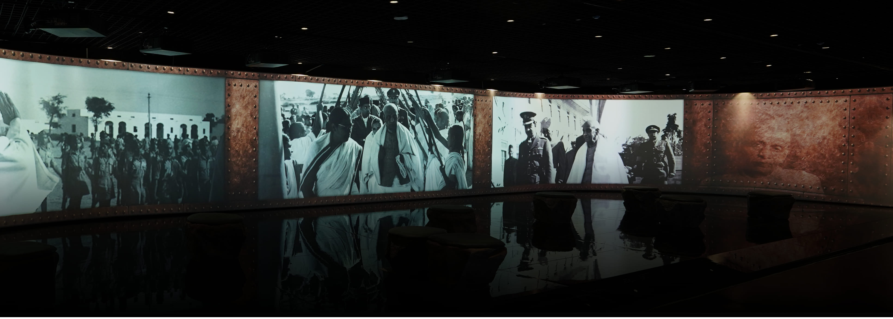

India has a rich tapestry of museums showcasing its diverse history and culture, with notable institutions like the Indian Museum in Kolkata, the National Museum in Delhi, and the Salar Jung Museum in Hyderabad. buildings in which we see many things of artistic, cultural, historical, traditional and objects of scientific interest. It is a great source of knowledge. It not only gives us knowledge but also makes us familiar with our history, culture, civilization, religion, art, architecture of our country. In the museum, there are many things which are kept for the public.

Welcome to India Museum Pass
Most of the museums are specific and have items pertaining to a particular field or area such as Railway, statues, Airforce, doll etc. Museums collect and preserve our objects and materials of religious, cultural and historical value. A museum is an institution dedicated to displaying or preserving culturally or scientifically significant objects. Many museums have exhibitions of these objects on public display, and some have private collections that are used by researchers and specialists. Museums host a much wider range of objects than a library, and they usually focus on a specific theme, such as the arts, science, natural history or local history. Public museums that host exhibitions and interactive demonstrations are often tourist attractions, and many draw large numbers of visitors from outside of their host country, with the most visited museums in the world attracting millions of visitors annually.